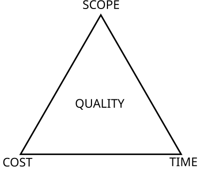
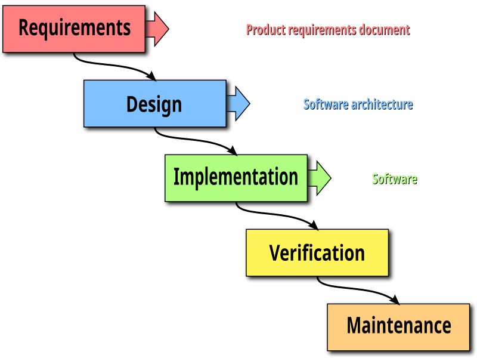
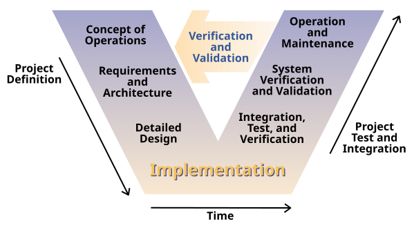
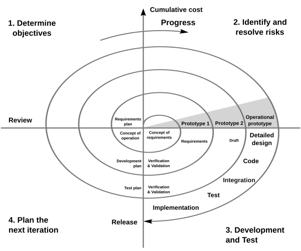
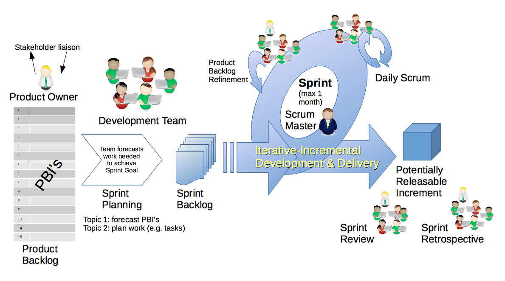
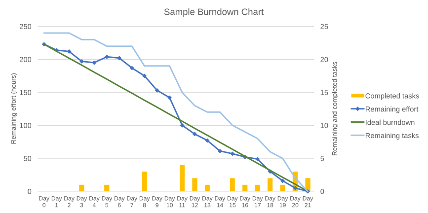
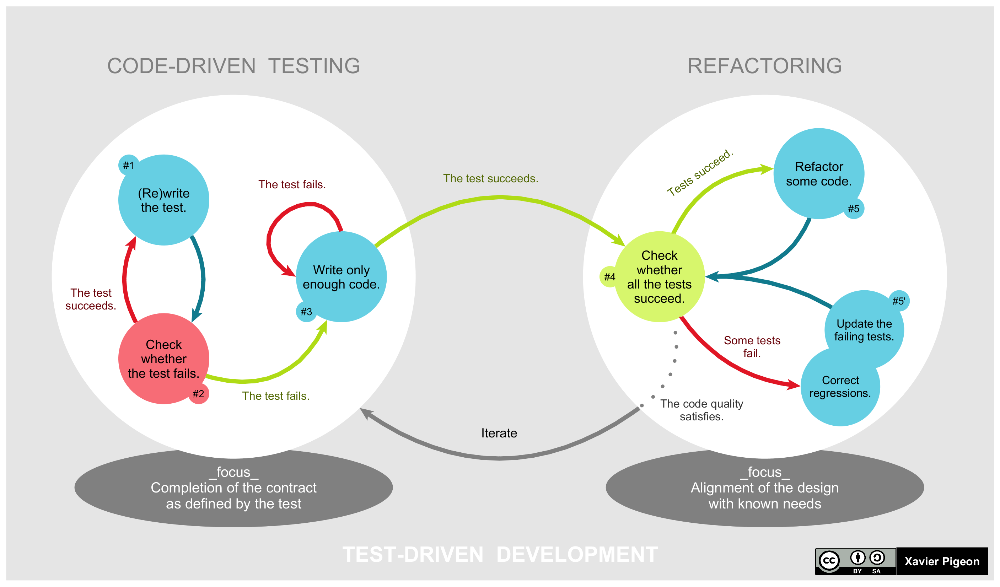
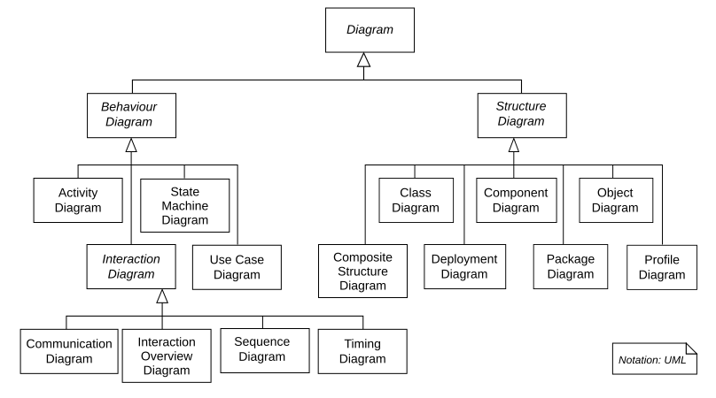
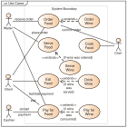

Software Engineering
“Walking on water and developing software from a specification are easy if both are frozen.” — Edward V. Berard
Software engineering is the systematic application of engineering approaches to the development of software: methods, techniques and tools for its specification, design, implementation, testing and maintenance. This course gives a broad view of the discipline, from requirements and life cycle models to agile methods, modeling with UML, design patterns and refactoring. Each part combines lectures, in-class exercises and hands-on work, and students carry out two projects during the semester.
- Part 1 – Foundations: product, people and process
- Part 2 – Requirements engineering
- Part 3 – Software life cycle models
- Part 4 – Agile methods: Scrum, XP and TDD
- Part 5 – Modeling with UML
- Part 6 – Design patterns
- Part 7 – Refactoring
- Further reading
This page gives an overview of the course. The slides, exercises and project statements are provided to students during the course.
Part 1 – Foundations: product, people and process
Software development is organized around three Ps:
- Product – the result of the project, whose quality is described by the ISO/IEC 25010 (SQuaRE) model: functional suitability, performance efficiency, compatibility, usability, reliability, security, maintainability and portability.
- People – the project owner (maîtrise d'ouvrage, MOA), who defines the needs and pays for the result, and the project contractor (maîtrise d'œuvre, MOE), who builds it.
- Process – how a project goes from the beginning to the end, through a life cycle and under the constraints of the project management triangle.


Why it matters: famous software failures
- Mariner 1 (1962): a missing hyphen in the guidance code sent wrong signals to the spacecraft, which had to be destroyed.
- Morris worm (1988): one of the first Internet worms, with damage estimated at up to $10 million.
- Patriot missile (1991): an accumulated clock rounding error prevented the interception of a Scud missile at Dhahran.
- EDS Child Support System (2004): “badly designed, badly tested and badly implemented”, with more than 1,000 reported problems.
- Mt. Gox (2011): a programming error created transactions that could never be redeemed, losing 2,609 bitcoins.
Exercise: identify the major causes of software failure in these cases (unclear requirements, insufficient testing, poor communication between stakeholders, unrealistic planning…).
Part 2 – Requirements engineering
Requirements specify what to build, not how. They range from high-level abstract statements (user requirements) to detailed specifications (system requirements), and they are read by very different people: clients, managers, developers and testers.
- Functional requirements describe the services the system provides and how it reacts to inputs; imprecise wording is a major source of conflict.
- Non-functional requirements constrain the system as a whole (performance, reliability, security, usability) and must be measurable: response time, availability, mean time to failure, etc.
The requirements engineering process
- Elicitation and analysis: interviews, observation, workshops, scenarios and use cases; stakeholders often don't know what they really want, use their own vocabulary and change their minds.
- Specification: natural language, structured templates and tables, or graphical notations: SysML requirement diagrams, Data Flow Diagrams (context diagram and top-down decomposition) and SADT.
- Validation: check validity, consistency, completeness, realism and verifiability, through reviews, prototyping and test-case generation.
Exercises: draw the DFD of a lemonade stand and of an ATM, an SADT diagram of an ATM, and a SysML requirement diagram. The course also introduces project selection criteria used before a project starts: payback period, net present value and profitability index.
Takeaway: requirements engineering is difficult because it involves many stakeholders with conflicting needs, and because requirements keep changing.
Part 3 – Software life cycle models
The Software Development Life Cycle (SDLC) goes through planning and analysis, requirements, design, development, testing, deployment and maintenance. Life cycle models organize these phases differently.





.svg){kind=link}
Predictive models work well when requirements are known and stable. The incremental model (Parnas) delivers a minimal functional subset first, then adds features; iterative models accept that requirements evolve during the project. The Marshmallow Challenge, played in class, shows why building and testing early beats planning everything up front.
Part 4 – Agile methods: Scrum, XP and TDD
Agile is first a mindset. The Agile Manifesto values individuals and interactions over processes and tools, working software over comprehensive documentation, customer collaboration over contract negotiation, and responding to change over following a plan.
Scrum


- Empirical process control based on transparency, inspection and adaptation; sprints of 2 to 4 weeks.
- Roles: Product Owner, Scrum Master and Developers.
- Ceremonies: sprint planning, daily scrum, sprint review and sprint retrospective (start / stop / continue).
- Artifacts: product backlog, sprint backlog, increment, and the burndown chart.
User stories
A user story follows the template “As a [persona], I want [to perform this action] so that [I get this value]”. Good stories satisfy the INVEST criteria and the 13 criteria of the Quality User Story framework. Large stories are split by workflow steps, business rule variations, data entry methods or deferred performance. Stories are estimated in story points with Planning Poker, and the project duration is derived from the team's velocity.




The course also presents the engineering practices of eXtreme Programming (pair programming, continuous integration, refactoring, small releases) and Test-Driven Development. Students practise with an online Scrum board.
Part 5 – Modeling with UML
Before UML, more than a hundred object-oriented methods and notations coexisted. The Unified Modeling Language provides a standard, method-independent notation with several levels of abstraction, to get an overall view of a system and to communicate about it.




- Use case diagrams: actors, use cases,
include,extendand generalization; textual description of a use case (for instance “withdraw cash”), refined over several iterations. - System sequence diagrams and sequence diagrams: lifelines, message types,
interaction frames (
alt,opt,loop), from an algorithm to a diagram, and centralized vs. distributed design. - Activity diagrams: actions, decisions, forks and joins, swimlanes – exercised on a training process, a job posting process and… a chocolate mousse recipe.
Part 6 – Design patterns
A design pattern is a proven, reusable solution to a recurring design problem in a given context. It is not a piece of code to copy, but a general concept — a blueprint — that each developer adapts to their own program. The classic catalog was published in 1994 by the “Gang of Four” (Gamma, Helm, Johnson and Vlissides), inspired by the patterns of the architect Christopher Alexander.
Why learn patterns?
- A toolkit of tried and tested solutions to common problems of object-oriented design.
- A shared vocabulary: saying “let's use an Observer here” is enough for the whole team.
- Good design principles made concrete: program to an interface, not an implementation; favor composition over inheritance; encapsulate what varies; the SOLID principles.
- A critical eye: patterns are sometimes used where a simpler solution would do, or only work around the limits of a language. A pattern solves a problem in a context; without the problem, it only adds complexity.
The catalog
The 22 classic patterns are grouped by intent.
Creational how objects are created
- Factory Method – let subclasses decide which class to instantiate.
- Abstract Factory – create families of related objects without naming their classes.
- Builder – build a complex object step by step.
- Prototype – create new objects by cloning an existing one.
- Singleton – ensure a class has a single instance with a global access point.
Structural how objects are assembled
- Adapter – make incompatible interfaces work together.
- Bridge – separate an abstraction from its implementation so both can vary.
- Composite – treat a tree of objects and a single object uniformly.
- Decorator – add responsibilities to an object dynamically by wrapping it.
- Facade – offer a simple interface to a complex subsystem.
- Flyweight – share common state between many fine-grained objects.
- Proxy – control access to an object through a substitute.
Behavioral how objects interact
- Chain of Responsibility – pass a request along a chain of handlers.
- Command – turn a request into an object (undo, queues, logs).
- Iterator – traverse a collection without exposing its structure.
- Mediator – centralize the communication between objects.
- Memento – save and restore the state of an object.
- Observer – notify subscribers automatically when an object changes.
- State – change the behavior of an object when its state changes.
- Strategy – make a family of algorithms interchangeable.
- Template Method – define the skeleton of an algorithm, let subclasses fill in steps.
- Visitor – add operations to a structure without changing its classes.
Anatomy of a pattern: Strategy
Each pattern is studied with the same template. Here is the Strategy pattern.
- Intent
- Define a family of algorithms, put each one in its own class, and make them interchangeable at run time.
- Problem
- An online shop supports card payment. Then PayPal, then bank transfer, then vouchers… Each new method
adds a branch to a growing
if/elsein the checkout code, which becomes fragile and hard to test. - Solution
- Extract each payment method into a class implementing a common
PaymentStrategyinterface. The cart keeps a reference to a strategy and delegates the payment to it, without knowing which one it is. - Structure
-
Class diagram of the Strategy pattern: the cart depends on the interface, not on a concrete payment method. - Code
-
interface PaymentStrategy { void pay(double amount); } class CardPayment implements PaymentStrategy { public void pay(double amount) { /* charge the card */ } } class ShoppingCart { private PaymentStrategy strategy; void setStrategy(PaymentStrategy s) { this.strategy = s; } void checkout(double amount) { strategy.pay(amount); } // no if/else on the payment type } - Applicability
- Use it when several variants of an algorithm exist, when a class is polluted by conditionals that select a behavior, or when the algorithm must be changed at run time.
- Pros and cons
- ✔ New strategies without changing the client (open/closed principle); algorithms isolated and testable.
✘ More classes; the client must know the differences between strategies; overkill when there are only two stable variants. - Related patterns
- State has the same structure, but the states know each other and trigger transitions; Template Method varies parts of an algorithm through inheritance, Strategy through composition.
Exercises: recognize the pattern behind a design problem, draw its UML class diagram, and implement it in Java.
Part 7 – Refactoring
Refactoring is a disciplined way of improving the internal structure of code without changing its external behavior. It turns “dirty” code into clean code: code that is easy to read and understand, without duplication, with a small number of classes and methods, that passes all its tests and is cheaper to maintain.
Technical debt
Dirty code is rarely written on purpose. It accumulates through tight deadlines, lack of tests, lack of experience, missing documentation or poor communication. Like a financial debt, every shortcut has to be paid back later, with interest: each new feature takes longer to add. Refactoring is the way to pay this debt back.
When and how to refactor
- When: the third time you do something similar (rule of three), before adding a feature, when fixing a bug, and during code reviews.
- How: in a series of small steps, each leaving the program working; run the tests after each step; never mix refactoring with the addition of new features.
Code smells
A code smell is a surface symptom that usually points to a deeper design problem.
Bloaters
Long Method, Large Class, Primitive Obsession, Long Parameter List, Data Clumps
Object-orientation abusers
Switch Statements, Temporary Field, Refused Bequest, Alternative Classes with Different Interfaces
Change preventers
Divergent Change, Shotgun Surgery, Parallel Inheritance Hierarchies
Dispensables
Comments, Duplicate Code, Lazy Class, Data Class, Dead Code, Speculative Generality
Couplers
Feature Envy, Inappropriate Intimacy, Message Chains, Middle Man, Incomplete Library Class
Refactoring techniques
| Group | Goal | Examples |
|---|---|---|
| Composing methods | shorten methods, remove duplication | Extract Method, Inline Method, Extract Variable, Replace Temp with Query |
| Moving features between objects | put responsibilities in the right class | Move Method, Move Field, Extract Class, Hide Delegate |
| Organizing data | richer, encapsulated data | Encapsulate Field, Replace Magic Number with Symbolic Constant, Replace Type Code with State/Strategy |
| Simplifying conditional expressions | tame complex conditionals | Decompose Conditional, Replace Nested Conditional with Guard Clauses, Replace Conditional with Polymorphism, Introduce Null Object |
| Simplifying method calls | clearer interfaces | Rename Method, Introduce Parameter Object, Replace Error Code with Exception |
| Dealing with generalization | move behavior along the hierarchy | Pull Up Method, Extract Interface, Form Template Method, Replace Inheritance with Delegation |
Example: Replace Conditional with Polymorphism
The Switch Statements smell below disappears when each case becomes a class — which leads naturally to the Strategy pattern of Part 6.
// Before
double pay(String type, double amount) {
if (type.equals("CARD"))
return amount * 1.02; // card fee
else if (type.equals("PAYPAL"))
return amount * 1.034; // PayPal fee
else if (type.equals("TRANSFER"))
return amount;
throw new IllegalArgumentException(type);
}// After
interface PaymentStrategy {
double pay(double amount);
}
class CardPayment implements PaymentStrategy {
public double pay(double amount) { return amount * 1.02; }
}
class PayPalPayment implements PaymentStrategy {
public double pay(double amount) { return amount * 1.034; }
}
// a new payment method = a new class, no change elsewhereTakeaway: patterns are often the destination of a refactoring, not a starting point: write simple code first, and refactor towards a pattern when the code asks for it.
Further reading
- Ian Sommerville, Software Engineering, 10th ed., Pearson, 2016.
- Roger S. Pressman and Bruce R. Maxim, Software Engineering: A Practitioner's Approach, McGraw-Hill.
- Ken Schwaber and Jeff Sutherland, The Scrum Guide.
- Mike Cohn, User Stories Applied: For Agile Software Development, Addison-Wesley, 2004.
- Craig Larman, Applying UML and Patterns, 3rd ed., Prentice Hall, 2004.
- Erich Gamma, Richard Helm, Ralph Johnson and John Vlissides, Design Patterns: Elements of Reusable Object-Oriented Software, Addison-Wesley, 1994.
- Eric Freeman and Elisabeth Robson, Head First Design Patterns, 2nd ed., O'Reilly, 2020.
- Martin Fowler, Refactoring: Improving the Design of Existing Code, 2nd ed., Addison-Wesley, 2018.
- Robert C. Martin, Clean Code: A Handbook of Agile Software Craftsmanship, Prentice Hall, 2008.
- Alexander Shvets, Refactoring.Guru – illustrated catalogs of design patterns and refactorings.